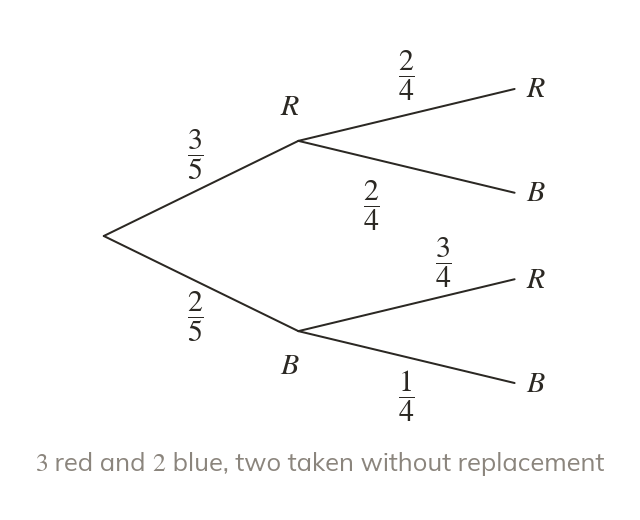
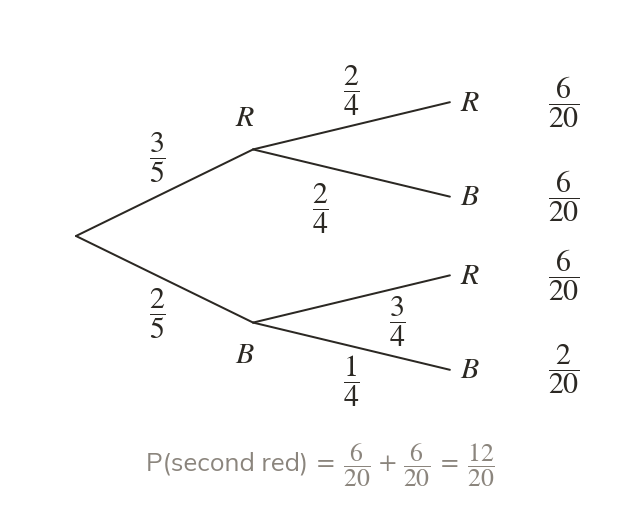
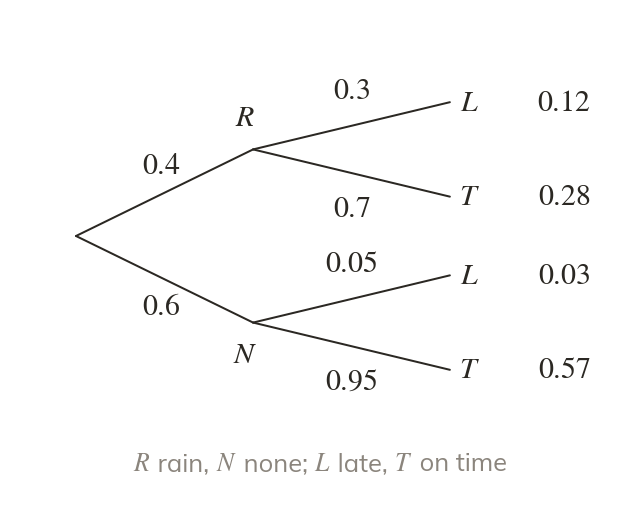
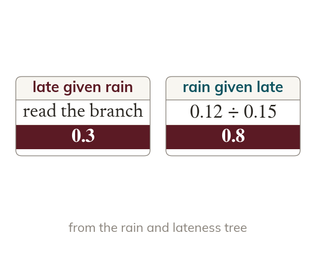

Topic 11H.4 · Conditional and Algebraic Probability · Lesson 3 of 6
Conditional Probability on Trees
Screening tests, quality checks and the weather chain one uncertain event onto another. A tree diagram records each second event given the first, so conditional probability is already sitting on its branches.
By the end you’ll know…
On a tree diagram the second set of branches carries conditional probabilities: each is the probability of the second event GIVEN the branch it follows.
Multiplying along a path gives and |
adds every path that ends in
Reading a tree backwards, | and which is not on any branch.
Without replacement the second-stage branches change, which is the commonest source of a conditional tree.
By the end you can
G7Find conditional probabilities from a tree diagram.
G7Work backwards on a tree diagram to find a reversed conditional probability, such as P(rain | late).
Work down the page at your own pace. Write every answer in your book first, then click to check it.
01
Do Now
About 5 minutes
1
P(rain) Find P(no rain).
2
P(win) for each game, independently. Find P(wins both of two games).
3
A bag has red and blue counters. Two are taken without replacement. Find P(red then blue).
4
Using the same bag, find P(both red).
Remember these?
LAST LESSONA Venn diagram has in A only, in both, in B only and in neither. Find P (A | B).
LAST WEEKShow that simplifies to
LAST TERMA right-angled triangle has an angle of with opposite side cm. Find the hypotenuse to s.f.
cm
LAST YEARSolve and list the positive integer solutions.
so
02
Learn
Read each card, then follow the worked examples one step at a time.

The second branches are 'given'
Each second branch is a probability given the first. Multiply along a path for P(both).
On a tree diagram each second-stage branch is a probability GIVEN the branch it follows. So P (second red | first red) is read straight off a branch, and multiplying along the path gives P(both red).

Add every path that ends in it
P(second red) adds every path ending in red. Each path is an 'and'; together they are an 'or'.
The probability of a second outcome on its own adds every path that ends in it. Each path is an 'and'; the paths together are an 'or'.
A tree without replacement
WORKED EXAMPLE A
A bag has red and blue counters. Two are taken without replacement. Find P (second red | first red), then P(both red).
Read the branch after red
Multiply along the path
AnswerP(both red)
WORKED EXAMPLE B
P(rain) Given rain, P(late) and given no rain, P(late) Find P(late).
Multiply along each late path
Add the paths
AnswerP(late)
YOUR TURN · a
A box has good and faulty bulbs. Two are taken without replacement. Find P (second faulty | first faulty), then P(both faulty).
Hint. Follow the worked example: Read the branch after red → Multiply along the path → Answer
;
YOUR TURN · b
P(train late) Given late, P(Sam misses the meeting) ; given on time, P(misses) Find P(Sam misses the meeting).
Hint. Follow the worked example: Multiply along each late path → Add the paths → Answer
03
Check your understanding
Pick an answer. If it's wrong, the feedback tells you which mistake it was.
On a tree, the branch from 'first red' to 'second red' is labelled What does mean?
Yes. After a red, reds are left of
Not quite. The branch comes after 'first red', so the condition is the first.
Not quite. P(both red) multiplies along the path:
Not quite. P(second red) adds both paths that end in red.
A bag has green and yellow sweets. Two are eaten without replacement. Find P(both green).
Not quite. No replacement: the second pick is green of
Yes.
Not quite. Multiply along a path, don't add.
Not quite. is only the second branch. Multiply by
Given ; given not Find
Not quite. is a branch. adds both paths ending in
Not quite. Multiply along each path, then add the paths.
Yes.
Not quite. Add the not-A path too:
04
Practise
mark as you go
Checkpoint. A bag has red and blue beads. Two are taken without replacement.Show your teacher before you go on
1.
Draw the tree diagram.
Hint. Follow the worked example: Read the branch after red → Multiply along the path → Answer
First: red blue After red: red blue After blue: red blue
2.
Find P(the second bead is blue).
Hint. Follow the worked example: Read the branch after red → Multiply along the path → Answer
1
A bag has red and white balls. Two are taken without replacement. Find P (second white | first white).
Hint. Follow the worked example: Read the branch after red → Multiply along the path → Answer
After a white: white of
2
Using question find P(both white).
Hint. Follow the worked example: Read the branch after red → Multiply along the path → Answer
3
Using question find P(the second ball is white).
Hint. Follow the worked example: Read the branch after red → Multiply along the path → Answer
4
P(Ava wins her first match) If she wins a match, P(she wins the next) ; if she loses, P(she wins the next) Find P(she wins exactly one of the first two).
Hint. Follow the worked example: Read the branch after red → Multiply along the path → Answer
Win then lose: Lose then win:
5
Two cards are taken from a pack of without replacement. Ben finds P(both hearts) as What is his mistake? Give the correct answer.
Hint. Follow the worked example: Read the branch after red → Multiply along the path → Answer
Without replacement, the second draw has hearts in
EXT
A bag has n red and blue counters. Two are taken without replacement. Write an expression for P(both blue).
Hint. Follow the worked example: Read the branch after red → Multiply along the path → Answer
05
Learn
Read each card, then follow the worked examples one step at a time.

Reading the tree backwards
P (first | second) divides one path by all paths ending in the second.
P (rain | late) asks about the first event once the second is known. It divides the rain-and-late path by P(late), the sum of every path that ends in late.

The two conditionals differ
P (late | rain) is a branch. P (rain | late) needs a path divided by a total.
P (late | rain) is a branch on the tree. P (rain | late) is on no branch: it needs a path divided by a total, and the two are usually very different.
WORKED EXAMPLE C
P(rain) Given rain, P(late) and given no rain, P(late) Given Sam is late, find P(it rained).
Add the late pathsP(late)
Take the rain-and-late path
Divide by P(late)
Answer
WORKED EXAMPLE D
A bag has red and blue counters. Two are taken without replacement. Given the second is red, find P(the first was red).
Add the second-red paths
Take the red-red path
Divide
Answer
YOUR TURN · c
P(ill) Given ill, P(test positive) ; given not ill, P(test positive) Given a positive test, find P(ill).
Hint. Follow the worked example: Add the late paths → Take the rain-and-late path → Divide by P(late) → Answer
P(positive) ;
YOUR TURN · d
A bag has red and blue counters. Two are taken without replacement. Given the two are different colours, find P(the first was blue).
Hint. Follow the worked example: Add the second-red paths → Take the red-red path → Divide → Answer
RB: ; BR: ; different: ;
06
Check your understanding
Pick an answer. If it's wrong, the feedback tells you which mistake it was.
Given ; given not Find P |
Not quite. is the path. Divide it by
Yes. so
Not quite. is P | A). Reverse it: path ÷
Not quite. is Now divide the A-and-B path, by it.
To find P (A | B) from a tree with A first and B second, which calculation is right?
Not quite. That's the path and It still needs ÷
Not quite. That branch is P (B | A), the other way round.
Yes. The path through and , over every path ending in .
Not quite. Dividing by gives P | Divide by
A bag has red and blue counters. Two are taken without replacement. Given the second is blue, find P(the first was red).
Yes. P(second blue) ; RB path ;
Not quite. is the path. Divide it by P(second blue)
Not quite. No replacement: after red, blue is of after blue, of
Not quite. That's P (second blue | first red). Reverse it with path ÷ total.
07
Practise
mark as you go
Checkpoint. Machine A makes of the items, machine B the rest. of A's and of B's items are faulty.Show your teacher before you go on
1.
An item is faulty. Find P(made by B).
Hint. Follow the worked example: Add the late paths → Take the rain-and-late path → Divide by P(late) → Answer
P(faulty) P (B | faulty) about
1
Given ; given not Find P |
Hint. Follow the worked example: Add the late paths → Take the rain-and-late path → Divide by P(late) → Answer
2
A bag has red and blue counters. Two are taken without replacement. Given the second is blue, find P(the first was blue).
Hint. Follow the worked example: Add the late paths → Take the rain-and-late path → Divide by P(late) → Answer
P(second blue) Blue-blue path:
3
of people have a condition. A test is positive for of people with it and for of people without it. Find P (has the condition | a positive test), to s.f.
Hint. Follow the worked example: Add the late paths → Take the rain-and-late path → Divide by P(late) → Answer
P(positive)
4
In question Jo says P (A | read off the tree. What is her mistake? Give the correct answer.
Hint. Follow the worked example: Add the late paths → Take the rain-and-late path → Divide by P(late) → Answer
is P | A), a branch; reverse it with
5
In question given the two counters are the same colour, find P(both red).
Hint. Follow the worked example: Add the late paths → Take the rain-and-late path → Divide by P(late) → Answer
Red-red: ; blue-blue: Same colour:
EXT
In question what false-positive rate would make P (has the condition | positive) exactly ?
Hint. Follow the worked example: Add the late paths → Take the rain-and-late path → Divide by P(late) → Answer
× rate Rate About of healthy people
08
Exit ticket
On paper, on your own, then check
1
Explain why P(both red) is found by multiplying along a path of a tree diagram.
The second branch is P (second red | first red) Both happening is P(first red) × (second red | first red)
2
A bag has red and green counters. Two are taken without replacement. Find P(both green).
3
Given ; given not Find P |
Finished? Next lesson: 11H.4.4 Counting Combinations of Outcomes.
09
How did it go?
Be honest: it's just for you
For each skill, tap the one that is true for you today. Your Revise pages start with anything you mark Not yet.
Find conditional probabilities from a tree diagram.
Work backwards on a tree diagram to find a reversed conditional probability, such as P(rain | late).
Your ratings are saved on this device only.
Practise more
After the lesson, or whenever you want more
Dr Frost
Log in, then search for a code to practise that skill.
357cDetermine a conditional probability from a probability tree.
635hDetermine a conditional probability using a tree diagram and the conditional probability formula.